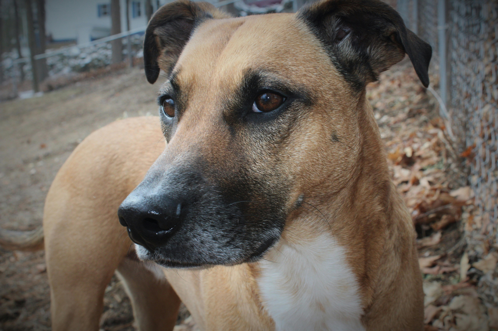

Toribio 🐾
Chimbote, Perú
Mis datos
Especie: Perro
Edad: Adulto
Peso: Pesado
Tamaño: Grande
Sexo: Macho
Nivel de actividad: Baja
Tipo de pelo: Largo
¿Cómo soy?
Tranquilo
Protector
Fiel compañero
Tierno
Me entregan
- Desparasitado
- Vacunado
- Con cartilla
- Esterilizado
Mi historia
Toribio vivía en la entrada de un mercado donde muchos comerciantes lo alimentaban, pero no tenía un lugar seguro. Fue rescatado tras una herida en la pata y hoy se ha recuperado por completo.
¿Quién me rescató?
Fui rescatado por Refugio Patita Feliz, quienes me curaron y me ayudaron a confiar nuevamente en las personas.